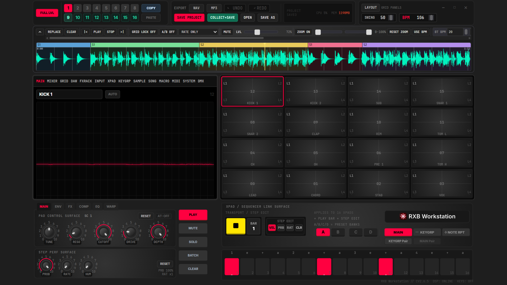

Draw a pattern, hear it change
A 32-step grid across sixteen pads, with per-step velocity, pan, probability and ratchet. Edits land under your hands while the transport runs.
Windows · Version 2.6.7 · Available now on Steam
A pad-first production and mixing workstation. Nothing to arm, nothing to set up — every pad is playable the moment the app opens.

A 32-step grid across sixteen pads, with per-step velocity, pan, probability and ratchet. Edits land under your hands while the transport runs.
Drums, music, vox, FX and backing each get their own summing bus with level, pan, mute and solo — so the drums fader actually means the drums.
A multi-lane DAW view for stems and backing tracks, sharing one timeline with your song sections.
Slice markers, automatic and equal division, and commit-to-pads — all non-destructive against the source file.
Song mode arranges scenes into sections with bar counts, half-bar granularity and per-step bank and tempo overrides.
Art-Net DMX output with a master dimmer, beat sync and eight lighting scenes, driven from the same transport as the music.
The factory sounds that ship with RXB Workstation were synthesised by its own audio engine. They are first-party content, and the licence grants you commercial use of anything you make with them — see the licence for the exact terms.
RXB Workstation 2.6.7 for Windows is available now on Steam. Buy it there and Steam keeps it installed and up to date.
The full user manual is published here, with numbered figures for every view and control.